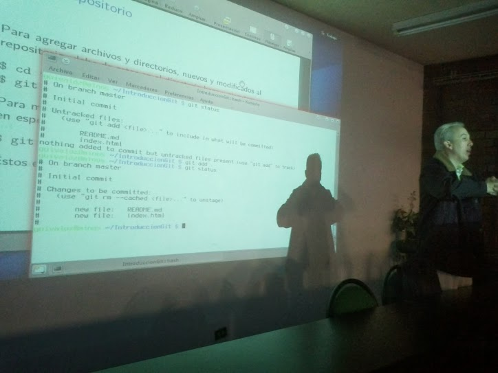

GULAG
Grupo de Usuarios de GNU/Linux de la Laguna.
Inicio
Próximamente: Congreso 2014
Sede, conferencias y talleres estan listos para el Congreso 2014.
Revoluciónate a tí mismo, sé un programador
Saber programar es conocer diferencia entre ver un reloj desde afuera y saber cómo funciona en su interior.
En este tiempo, la edad dorada de la informática, vemos que ya es un hecho que casi todos disponemos de dispositivos digitales complejos; háblese de computadoras, laptops, tablets o celulares inteligentes. Como es natural, de todas estas personas, la mayoría son usuarios y la minoría son creadores, es decir, quienes hacen programas para que los usen. Lamentablemente esta situación es igual en personas que ejercen las diferentes ramas de la informática; en la mayoría de nosotros hay muy pocos con entusiasmo para programar, se prefieren las labores de venta, instalación, comunicaciones, etc.
¿Qué sería de nuestra ciudad/estado/país/mundo si todo profesionista dedicara algo de su labor a la programación?. Y en general, para el nivel escolar, si no sólo hubiera las típicas clases de computación, sino también talleres de programación, ¿sería esto una gran herramienta para su futuro?. Seguramente que sí.
OpenSUSE Li-F-E Linux For Education Distribución Educativa
La utilización de GNU/Linux es muy noble en ambientes educativos, no por la gratuidad del software, sino por la variedad de aplicaciones con que cuentan las distribuciones educativas de GNU/Linux, por eso, en esta ocasión, les hablaré de OpenSUSE para la educación.
Normalmente, a los usuarios de cualquier sistema, al aprender autilizarlo, no les interesa cambiar o experimentar, esto es muy normal, el miedo al cambio o salir de su zona de confort. Por eso la gran fortaleza del sistema operativo GNU/Linux en muchas de sus distribuciones, es la capacidad de poderse probar en su totalidad en vivo, es decir, sin necesidad de instalarse .
Para probar OpenSUSE Li-F-E (Linux For Education), solo es necesario tener el disco grabado y arrancar nuestra computadora desde el lector de DVD. La imagen completa del dvd se puede descargar de http://sourceforge.net/projects/opensuse-edu/files/download/ISOs/openSUSE-Edu-li-f-e.x86_64-13.1.1.iso/download, solo hay que quemar el dvd y listo; es una versión en vivo para probarla, disfrutarla e instalarla se se desea, pero si no se cuenta con unidad lectora de disco, también se puede acceder desde una memoria USB de al menos 4Gb.
Sobre la sección Bytes Libres
Desde éste año, 2014, los miembros del GULAG han empezado a escribir en la sección Bytes Libres en el periódico El Siglo de Torreón.
La sección Bytes Libres es diferente a las demás, no por que se habla en ella sobre temas relacionados con el software libre, con GNU/Linux o con temas relacionados. No, es diferente por una cosa: sus autores.
Uso de Git, Github, Markdown y Ruby en el sitio web
En la reunión correspondiente a mayo, guivaloz nos mostró la manera de usar git, github, ruby y markdown para mantener actualizado el sitio del GULAG por cada uno de los miembros del mismo.

FLISOL 2014

Con el objetivo de promover y difundir el uso de Software Libre, el próximo sábado 26 de Abril de 2014 se llevará a cabo el Festival Latinoamericano de Instalación de Software Libre en Plaza Cuatro Caminos, atrio principal, en Torreón, Coahuila, México.
El Festival Latinoamericano de Instalación de Software Libre (FLISOL) es el evento internacional más importante y el más grande a nivel mundial de instalación de Software Libre; el cual es realizado gratuitamente, a los asistentes que participen llevando su equipo de cómputo, se les instala software libre en los mismos. El evento FLISOL lo ha venido realizando GULAG desde el año de 2006 ininterrumpidamente con el apoyo de diversos patrocinadores. El festival ha tomado tanta relevancia a nivel internacional que en ciudades de países NO latinoamericanos como Portugal, Estados Unidos y Canadá se han unido a su realización.
Distribuciones ofrecidas:
- Debian (recomendado)
- Guadalinex
- Manjaro
- Mint
- Opensuse
- Trisquel
- Ubuntu
Fecha Lugar y hora
- Fecha: Sábado 26 de Abril de 2014
- Lugar: Plaza Cuatro Caminos, Atrio principal. Blvd. Independencia #1300 Ote, Col. Navarro Torreón, Coahuila, México.
- Horario: De las 11:00 hasta las 18 horas.
Actividades
- Charlas
- Muestra de Software Libre
- Festival de instalación
- Contacto con la comunidad de Software Libre local.
ATENCIÓN
Se recomienda que antes de asistir al evento haga un RESPALDO DE LA INFORMACIÓN IMPORTANTE y defragmentar el disco duro.
Programa
- 11:00 Bienvenida
- 11:10 AM “El Software Libre y su cultura” por Osvaldo Salazar (ChicoXXX)
- 12:00 PM Los Mapas del Futuro por Sergio Aguilera
- 12:45 PM Firefox OS por Lula Villalobos
- 2:00 PM a 6:00 PM Installfest: Instalación de software libre en las computadoras que lleven los asistentes.
Evento dirigido a todo tipo de público: estudiantes, académicos, empresarios, trabajadores, funcionarios públicos, entusiastas y aun personas que no poseen mucho conocimiento informático.
Descargas
{kind=link}
{kind=link}
{kind=link}
Gulag aprendiendo a usar GitHub
En la junta de hoy se impartió un taller sobre GitHub y el CMS de Movimiento libre, además tuvimos la presencia de la comunidad de Python Laguna.
La gente de Python Laguna extendió la invitación a todos los interesados en formar parte de esta nueva comunidad que nace en la región: Python Laguna es una comunidad de amantes y entusiastas del lenguaje Python que buscan extender y popularizar su uso, si buscas pertenecer a este grupo no dudes en visitar su página.
Por otra parte, Sergio Aguilera nos Impartió un mini taller donde se enseñó a la comunidad, como actualizar la página de la GULAG desde github.
Este taller tomo aspectos importantes en la maquetación del contenido como lo es, la estructura de los archivos y una guía de inicio rápido para Markdown el maquetador de contenidos usado para la página.
Se habló del motor principal de nuestro sitio, el CMS de movimiento libre, un manejador de contenidos nacido en la laguna con un potencial enorme, codificado en ruby, otorga muchas facilidades a la hora de crear sitios web.

Primera reunion del año- Enero 2014

El pasado sábado 18 de enero del 2014 se llevo acabo la primera junta del año, en la cual se acordaron diversos puntos, que fueron expuestos con anterioridad en la posada del grupo.
-
Las juntas mensuales se dividirán en 2 secciones, de 4:00pm a 5:00pm, se darán pláticas a los nuevos integrantes del grupo, y de 5:00pm en adelante, se darán pláticas de nivel Intermedio-Avanzado.
-
De inicio, Sergio Aguilera,dará las pláticas a los nuevos integrantes, sin embargo, se extiende a cualquiera que quiera dar una plática para los nuevos integrantes.
-
La revista está empezando a ser maquillada por Osvaldo Salazar (ChicoXXX), de igual manera, todo el que quiera publicar un artículo en la misma, favor de contactarlo.
-
Debido a la falta de foro, no se trató el tema de suspender las flisol, sin embargo, se tomó la decisión que el flisol de este año si se llevara a cabo, independientemente de que el próximo año dicho evento sea suspendido.
Sergio Aguilera, hablo sobre GitHub mostrando las bondades que ha incorporado este año y como han impactado de manera significativa a el software libre, junto a ello, anuncío que la pagina de la GULAG, actualmente se encuentra Hospedada en Github, gracias a las bondades de GitHub Pages.
Gracias a este nuevo hosting, ahora la actualización de la pagina se ve desentralizada, es decir, ahora cualquier usuario de la GULAG podra subir una entrada a el sitio.
Guillermo Valdes nos acompaño con un taller introductorio a git, una herramienta por demas necesara en todo desarrollo, en especial, en aquellos que usan GitHub como manejador de versiones.
Se a creado un respositorio en GitHub donde se subiran mensualmente el recopilatorio de las imagenes tomadas en cada junta, para acceder a el, favor de hacer click aqui.
El proximo mes, se llevara acabo la primera parte de un taller sobre creación y actualización de blogs y sitios web mediante GitHub Pages y el CMS de Movimiento Libre, impartido por Sergio Aguilera.
Requisitos Maquina con GNU/LINUX